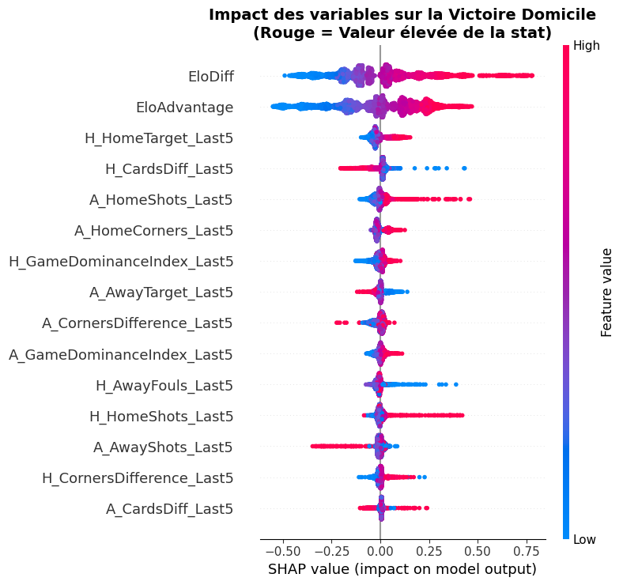
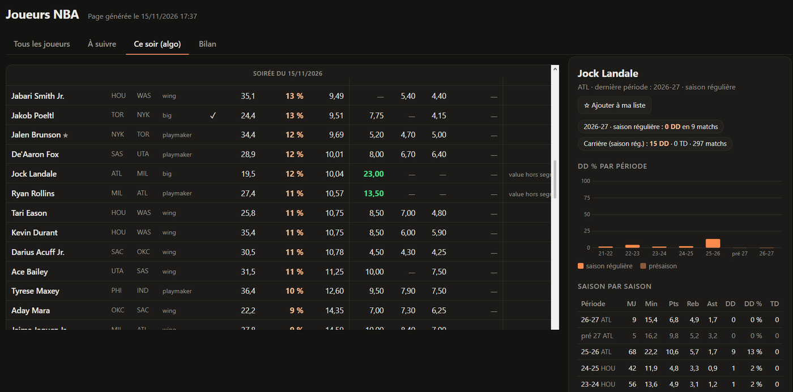

Ingénieur Data, spécialisé en Sports Analytics.
Ingénieur diplômé de Polytech Clermont (Mathématiques appliquées, 2026). Pendant neuf mois au Pôle Data de la LFP Media, j'ai conçu une plateforme de statistiques, des rapports automatisés et des analyses pour ceux qui font vivre la Ligue 1 à l'antenne. Avant cela, un stage de recherche à l'Université de Malmö m'a conduit à co-signer un article dans Frontiers in Digital Health.
Ce que j'aime : partir de la donnée brute et aller jusqu'à l'outil ou l'analyse qu'une équipe utilise vraiment.
Expérience
Neuf mois en production au Pôle Data de la LFP Media, et un stage de recherche qui s'est conclu par une publication.
LFP Media — Pôle Data
Direction Médias et Production · Paris · fév. – nov. 2026 · stage, puis CDD
LFP Media est la filiale commerciale de la Ligue de Football Professionnel. Au Pôle Data, j'ai d'abord été Assistant Chef de Projet Football Data (stage), puis Chargé de Mission Football Data (CDD). Le fil conducteur : faire arriver la bonne statistique, au bon moment, chez ceux qui racontent la Ligue 1 — la rédaction, l'antenne, le magazine et les diffuseurs internationaux.
Schéma de principe de la plateforme — aucune donnée ni capture de l'outil.
Elle réunit 11 saisons de données Opta et 2 de Genius Sports, récupérées via API REST, soit 2 953 joueurs et 474 variables. Elle propose des profils joueurs et équipes, la comparaison d'équipes, les records historiques et un glossaire, et fiabilise et accélère les requêtes data de la rédaction. Pendant le CDD, j'y ai intégré la saison 2026-27, puis j'ai organisé la passation de l'outil à la DSI.
Une page de la plateforme génère, à chaque journée, un rapport rédigé en langage naturel : les faits à retenir comparés à l'historique depuis 2015-16 (à nombre de matchs égal), les projections au rythme actuel, les séries en cours et les performances marquantes, à partir des données event et physiques. Le rapport se décline en « focus régionaux » par nationalité (par exemple l'Afrique) pour les diffuseurs internationaux.
Des rapports HTML générés en Python évaluent deux prestataires, un de tracking et un d'event, face aux flux de production : protocole comparatif, métriques de divergence (RMSE, MAE, MAPE) et détection d'anomalies. Livrable : un référentiel des variables essentielles attendues d'un nouveau prestataire, devenu la base des échanges avec les fournisseurs.
Aussi au Pôle Data
Analyses et production médias — dossiers statistiques d'avant-match pour Ligue 1+ et les diffuseurs internationaux (focus joueurs, xG, classements, timecodes, profils comparatifs, visualisations), jusqu'à 20-30 pages ; demandes ponctuelles de la rédaction et insights hebdomadaires FR/EN.
Data Line — participation à la publication des épisodes de Data Line, le format data de Ligue 1+.
R&D — conception et test de modèles de visualisation de données pour l'enrichissement du signal broadcast.
Reporting — rapport d'usage des outils data mis à disposition des clubs de Ligue 1 et Ligue 2 (plateforme d'analyse, API, flux temps réel), d'août à octobre 2026.
Outils et données propriété de la LFP : ni capture, ni extrait de rapport, ni donnée ne sont publiés ici.
Université de Malmö — Stage de recherche
Suède · mars – juil. 2025 · publication dans Frontiers in Digital Health
Peut-on estimer la sévérité de la maladie de Parkinson à partir d'un capteur porté au poignet ? Le score clinique de référence, la MDS-UPDRS, s'évalue en consultation ; l'enjeu est de l'approcher à partir de l'activité enregistrée en continu à domicile.
GGIR et nParACT, sont complétés par des embeddings SimCLR utilisés
comme variables. Plusieurs familles de régression sont comparées (linéaires régularisées, arbre de décision,
k plus proches voisins), avec une sélection de variables par SHAP et une évaluation en
Leave-One-Patient-Out : le patient testé est toujours exclu de l'entraînement.
Résultats et publication
r = 0,75 sur les sous-scores et r = 0,89 sur les scores composites.
Article publié le 13 juillet 2026 : Association between Wrist-Worn Actigraphy and the MDS-UPDRS Parkinson's Disease Rating Scale through Machine Learning: An Exploratory Study.
Limite. Sélection de variables calculée sur l'ensemble de la cohorte : des performances à confirmer sur une cohorte indépendante, ce qui justifie le qualificatif d'étude exploratoire de l'article.
Données patients protégées (santé) — non partageables ; l'article est en accès libre.
Projets sport
Deux études de cas menées pendant mon cursus — de la donnée brute au résultat, avec le raisonnement méthodologique à chaque étape.
Prédiction de résultats et efficience du marché des paris
Projet 5A · sept. 2025 – janv. 2026 · binôme avec Simon Guillet · dépôt public
Les données sportives publiques (Elo, forme, statistiques) suffisent-elles à prédire un match aussi bien que les cotes des bookmakers — sans utiliser ces cotes ? Une chaîne de modélisation complète sur 52 580 matchs des 5 grands championnats européens (2006–2025) pour répondre à cette question sous l'angle de l'efficience de marché.
Deux sources hétérogènes sans identifiant commun : les résultats et cotes de Football-Data.co.uk (228 377 matchs) et les classements Elo de ClubElo.com (242 591 snapshots). Les noms de clubs divergent (« Man Utd » vs « Manchester United ») : une jointure stricte aurait rejeté plus de 40 % des lignes, en excluant surtout les outsiders — un biais de sélection majeur. J'ai mis en place un pipeline de fuzzy matching (distance de Levenshtein, seuil de similarité à 85 %, complété par un dictionnaire de correspondances corrigé à la main), portant la complétude des indicateurs Elo de < 60 % à 90,6 %, et à 100 % sur le périmètre final.
Un audit de complétude (data profiling) a ensuite guidé un entonnoir de sélection : plutôt que de garder le volume maximal (165 619 matchs, 82 % de complétude, trop bruités), j'ai retenu le sous-ensemble Big 5 / 2006–2025 (52 580 matchs, 97,3 % de complétude) — un choix assumé de la qualité du signal sur la quantité, la coupure 2006 étant justifiée par un point d'inflexion dans la disponibilité des statistiques de jeu.
- Une trentaine de variables organisées en trois axes : force intrinsèque (EloDiff — la variable maîtresse, corrélée à 0,889 à la probabilité implicite du marché), forme récente et qualité de jeu (tirs, corners, différentiel de cartons).
- Fenêtres glissantes de profondeur k = 5, décalées d'un match (
shift(1)) pour garantir la causalité, et indicateurs domicile / extérieur disjoints pour capter les profils asymétriques. - Trois garde-fous anti-fuite indépendants : jointure Elo par
merge_asof(direction='backward')(aucun snapshot postérieur au match), lag-1 sur toutes les fenêtres, et validation croisée temporelle (TimeSeriesSplit, 5 folds expansifs) — jamais de shuffle aléatoire.
Trois familles comparées : Régression Logistique (baseline linéaire), Random Forest et XGBoost, chacune déclinée en version « avec cotes » (test de contrôle) et « aveugle » (sans cotes). Chaque modèle est jugé sur trois dimensions : discrimination (accuracy), calibration probabiliste (Log Loss, Brier, ECE) et rentabilité économique (ROI d'une stratégie de value-betting).


Détails d'implémentation & MLOps
Hyperparamètres XGBoost (approche conservatrice, anti-surapprentissage sur données bruitées) :
max_depth = 4, subsample = 0.8, learning_rate = 0.05, 300 arbres.
Classe minoritaire « match nul » (≈ 26 %, faible ratio signal/bruit) : après échec du
rééquilibrage balanced (chute de l'accuracy sous 49 %), choix d'une pénalisation asymétrique douce
(wD = 1,1). Le XGBoost capte un rappel de 6 % sur les nuls, contre ≈ 1 % pour la RF.
Refonte MLOps du dépôt (menée par mes soins après le projet académique) : package Python installable (src layout, PEP 517), pipeline CLI end-to-end, 49 tests unitaires, CI GitHub Actions (pytest sur Python 3.11 & 3.12, ruff, mypy).
Profilage de joueurs par style de jeu — Clermont Foot 63
Projet 4A · oct. 2024 – fév. 2025 · binôme · partenariat Clermont Foot 63 · données StatsBomb
Traduire des statistiques brutes StatsBomb (Ligue 1, 2023-24) en styles de jeu interprétables pour les recruteurs, via un pipeline JSON → SQLite → clustering non supervisé → dashboard Streamlit.
Profils identifiés & dashboard
Pivot — dégagements, longs ballons sous pression, duels aériens gagnés élevés ; faible en dribble et pressing. Construction — fortes valeurs xGChain / xGBuildup, moteur de la progression du ballon. Mauvais finisseur — présence dans le jeu mais xG et finition faibles.
Dashboard Streamlit pour les recruteurs : fiche joueur avec centiles par variable
discriminante, comparaison de deux joueurs par radar chart, nuage de points à quadrants (médianes),
recherche filtrée par club. Visualisations Plotly / Seaborn, normalisation StandardScaler.
Dépôt privé (données StatsBomb sous licence) — code non publié, approche détaillée ici.
En cours
Des démarches en cours, présentées comme telles : un protocole et des outils, pas encore de résultat.
DxD — value sur le marché des double-doubles en NBA
Projet personnel · NBA, avec la WNBA comme terrain de test
Estimer la probabilité qu'un joueur réalise un double-double — au moins 10 unités dans deux catégories statistiques sur un même match — et la comparer aux cotes du marché. La WNBA sert de terrain de test.
Chaîne causale du modèle : chaque étape conditionne la suivante.

Côté ingénierie
Une seule base de code pour la NBA et la WNBA, la ligue se choisissant par configuration ; une base DuckDB ; 13 contrôles automatiques exécutables sans réseau ; une sauvegarde quotidienne vérifiée de la base.
Dépôt privé, publication prévue une fois finalisé.
Sport Forecast Hub
En coursUn centre personnel de détection de value multi-sports : historique de cotes publiques d'opérateurs français, probabilités issues de modèles (double-double NBA, buteur NHL, vainqueur d'un match de tennis), suivi par CLV, calibration et ROI.
Un pré-enregistrement est figé par marché avant le premier signal ; la CLV (closing line value) sert de métrique principale. Collecte à faible fréquence, sur pages publiques uniquement ; aucun pari n'est automatisé.
Projet personnel · dépôt privé, publication prévue une fois finalisé
Cyclisme — ratings dynamiques des coureurs
En réflexionEstimer, pour chaque coureur, un niveau propre à chaque type de terrain (plat, vallonné, montagne, contre-la-montre), puis en déduire des probabilités de victoire et de top 10.
Démarche envisagée : un Elo multi-coureurs, puis un modèle de Plackett-Luce dynamique, mis à jour course après course ; réglage sur 2025, puis un test unique, figé, sur la saison 2026. Pas encore lancé.
Projet personnel · dépôt privé, publication prévue une fois finalisé
Projets de cours
Des travaux de groupe menés pendant ma formation, sur des domaines volontairement variés — vision par ordinateur, apprentissage par renforcement, BI, bases de données.
Estimation de profondeur monoculaire — fine-tuning LoRA
Adaptation du modèle de fondation Depth Anything V2 à un jeu d'images industrielles (caméras Zivid, pneus stockés) par LoRA, pour corriger un fort domain gap. Cibler les couches denses plutôt que les seules couches d'attention a été déterminant pour retrouver l'échelle métrique : le RMSE passe de 1,81 m à 7 cm et la précision géométrique (δ < 1,25) de 17 % à 99,4 %, avec un F1 de 0,96 sur la détection d'obstacles proches.
Projet de groupe · vision par ordinateur
Apprentissage par renforcement — contrôle de trajectoire (cas Michelin)
Implémentation d'un agent DDPG (acteur-critique, experience replay, réseaux cibles, bruit d'exploration) pour piloter un véhicule sur circuit à la limite d'adhérence, en s'appuyant sur un modèle de rigidité de dérive du pneumatique. Volet complémentaire d'optimisation bayésienne pour le calibrage de ce modèle.
Projet de groupe · apprentissage par renforcement et optimisation
Sécurité en France vs Europe — tableau de bord Power BI

Sujet libre, en binôme : l'essentiel du travail a porté sur la recherche de sources fiables (principalement INSEE), leur nettoyage et leur mise en forme sous Power Query. Le rapport compte 7 pages thématiques (faits, profils auteurs/victimes, police, récidives, comparaison UE), rendues navigables par mesures DAX, segments et signets.
Alphabet de la langue des signes française (LSF) — vision par ordinateur
Reconnaissance des lettres de l'alphabet de la LSF à partir d'images : préparation du jeu d'images, entraînement d'un réseau de neurones convolutif (CNN) et évaluation. Le modèle atteint 92 % d'accuracy.
Binôme · vision par ordinateur
MusicShop — base de données & application Java
Conception d'un schéma relationnel SQL pour une boutique de musique (modélisation, contraintes d'intégrité, requêtes) et développement de l'application Java associée pour l'exploiter.
Binôme · bases de données & POO
Compétences et formation
Les outils et méthodes mobilisés dans les projets ci-dessus.
Langages et ingénierie
Python (pandas, scikit-learn, XGBoost, SHAP, rapidfuzz), SQL, Git/GitHub, API REST, pipelines ETL, Docker, PostgreSQL, SQLite, DuckDB, pytest, CI/CD (GitHub Actions), R (GGIR).
Machine learning
Apprentissage supervisé et non supervisé, séries temporelles, feature engineering, Time Series Split, validation anti-fuite (LOPO), clustering (K-Means, CAH), calibration.
Données sportives
Flux event et tracking (Opta, Genius Sports, StatsBomb ; aussi Hawk-Eye, Champion Data), KPI de performance, métriques de recrutement, classement Elo.
Visualisation et produit
Streamlit, Plotly, Matplotlib, Power BI (DAX, Power Query).
Notions (projets de cours)
PyTorch, TensorFlow, Hugging Face, PEFT/LoRA.
Langues
Français (langue maternelle), anglais B2+ (TOEIC 870/990).
Diplôme d'ingénieur — Polytech Clermont
2023 – 2026Vice-président de l'association IMDS.
Classe préparatoire MP
2021 – 2023À propos et contact
Le sport est d'abord une passion : je suis de près le football, le basket et le tennis, et je ne manque pas les grandes compétitions internationales. Je passe beaucoup de temps à décortiquer les confrontations à venir pour repérer les indicateurs d'avant-match qui pèsent vraiment, et je collectionne les cartes de sport.
Disponible immédiatement pour un CDI — Sport, Betting, Tech. Basé à Paris, mobile en France et en Europe.